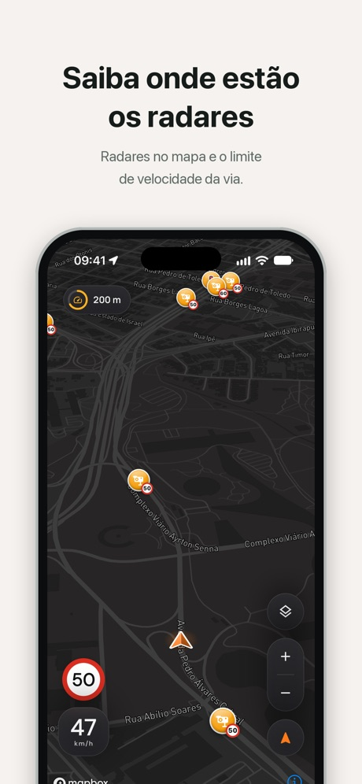
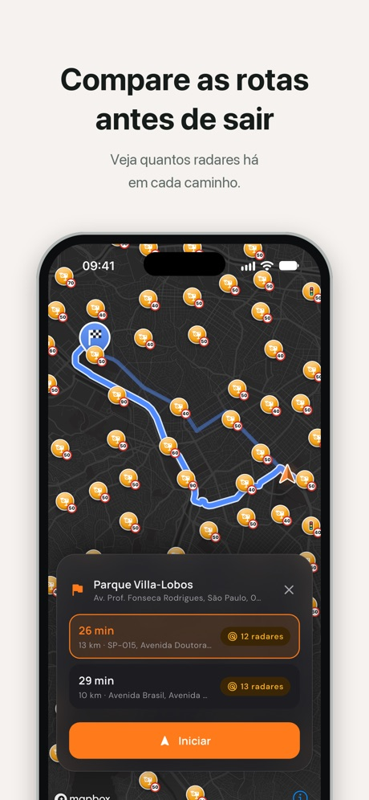
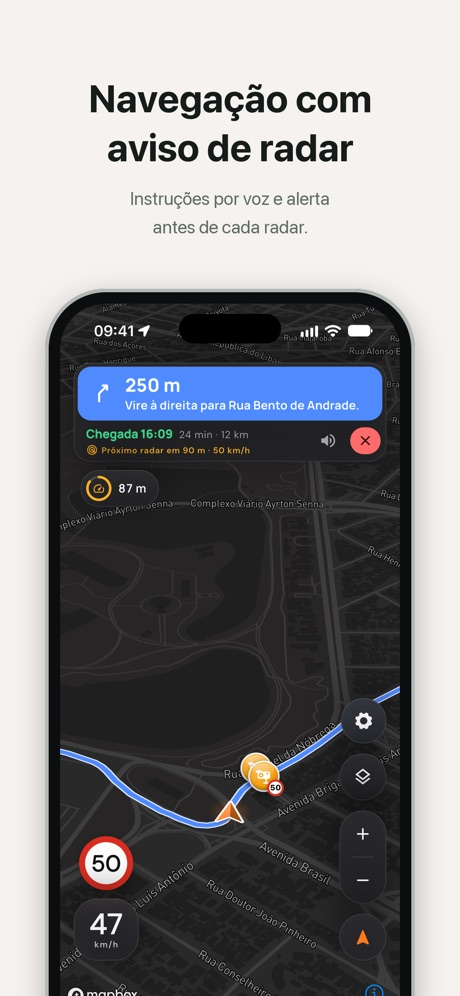
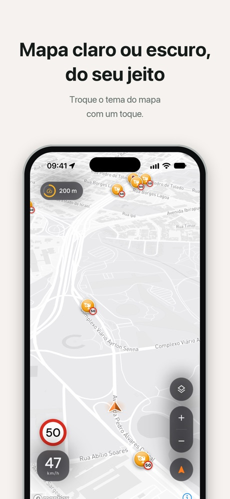

App mobile · Android e iOS
RadarZero
Radares de velocidade no mapa, alerta por som e voz antes de cada um e o limite da via sempre à vista.
Telas




Sobre
O RadarZero mostra os radares de velocidade e as câmeras de avanço de sinal no mapa e avisa, com bipe e voz, quando você se aproxima de um radar à frente no seu sentido. O aviso chega mais cedo quanto maior a velocidade e fica em silêncio com o carro parado.
O app identifica a rua em que você está e mostra o limite de velocidade dela ao lado da sua velocidade atual. Com o Premium, você busca o destino, compara rotas pela quantidade de radares e segue a navegação por voz.
Não é preciso criar conta. Os dados de radares e vias vêm do OpenStreetMap. O RadarZero não é um detector de radar e não tem vínculo com órgãos de trânsito.
Recursos
- Alerta de radar
- Bipe e voz antes de cada radar, ajustados à sua velocidade e ao sentido da via.
- Limite de velocidade
- O limite da rua em que você está, ao lado da sua velocidade atual.
- Rotas com radares
- Compare rotas pela quantidade de radares antes de sair.
- Navegação por voz
- Instruções de cada curva e aviso de cada radar no caminho.
- Trechos fiscalizados
- Radares de trecho contados do início ao fim do percurso.
- Mapa para dirigir
- Mapa escuro que gira com o carro, com opção de tema claro e uso em paisagem.
Planos
| Recurso | Grátis | Premium |
|---|---|---|
| Mapa de radares e alertas por som | Incluído | Incluído |
| Limite de velocidade da via | Incluído | Incluído |
| Busca de endereços e rotas com radares | Não incluído | Incluído |
| Navegação por voz | Não incluído | Incluído |
| Sem anúncios | Não incluído | Incluído |
O Premium tem plano mensal e anual. Preços, período de teste e condições aparecem no app antes da compra.
Como foi feito
Desenvolvi o app em Flutter, com uma arquitetura organizada por feature. Os radares de cada região são desenhados por uma camada nativa do Mapbox, montada em isolates do Dart, e a posição do GPS é casada com a via pelo sentido de direção para escolher o limite certo e só alertar sobre radares à frente.
Os dados vêm de uma API própria em Go, que importa radares e vias do OpenStreetMap todo mês, guarda tudo em SQLite e entrega por quadrantes do mapa. O app guarda os quadrantes no aparelho e só busca de novo quando ficam antigos. Busca de endereços e rotas usam o Mapbox.
- Flutter
- Dart
- Dart Isolates
- GetX
- Mapbox
- OpenStreetMap
- Go
- SQLite
- Docker
- Firebase Analytics
- Crashlytics
- AdMob
- In-App Purchase
Privacidade
Sem conta e sem cadastro. A localização é usada no aparelho para os alertas e a navegação, e a localização exata não vai para o servidor. O app usa o Firebase para estatísticas de uso e relatórios de falha e exibe anúncios no plano gratuito.